We Are Community Helpers Too
A story about growing — and discovering the helper in you
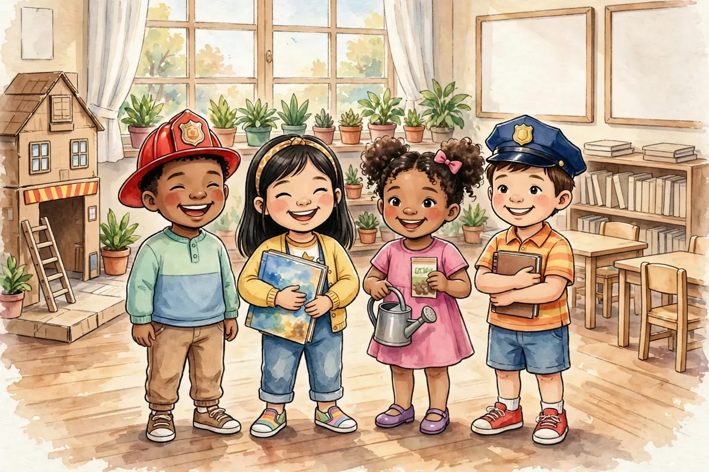
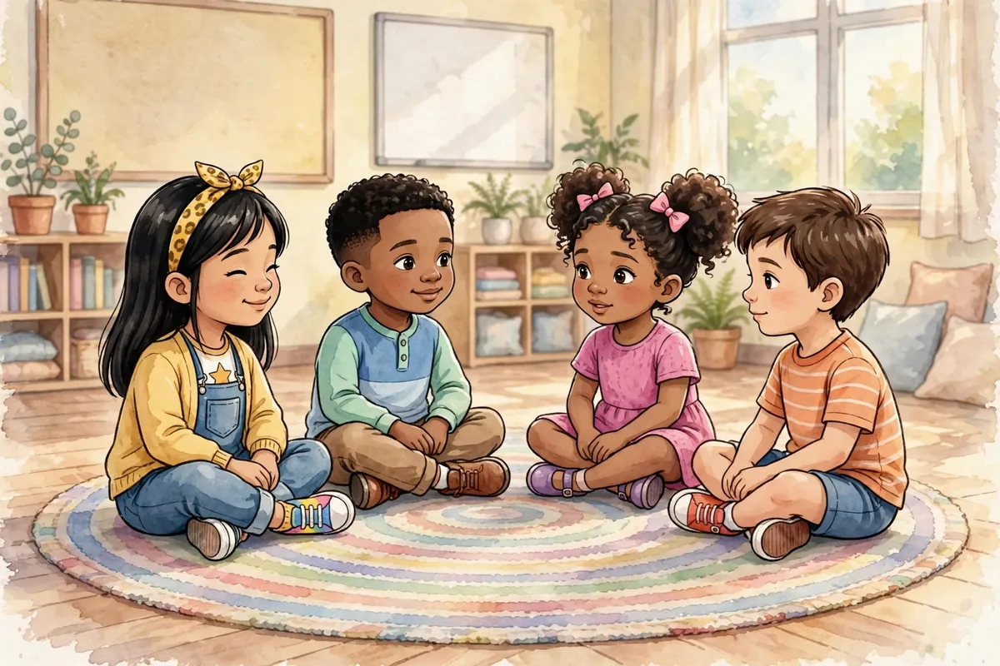
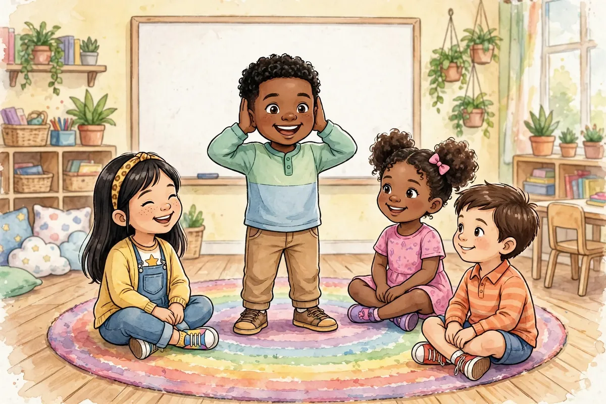
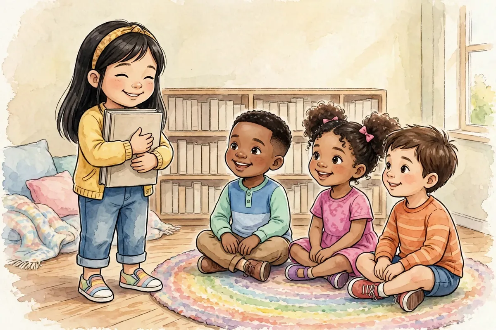
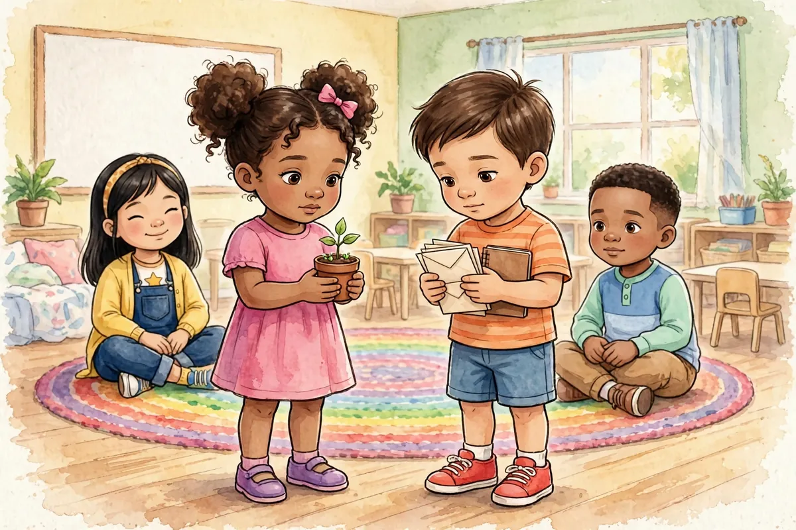
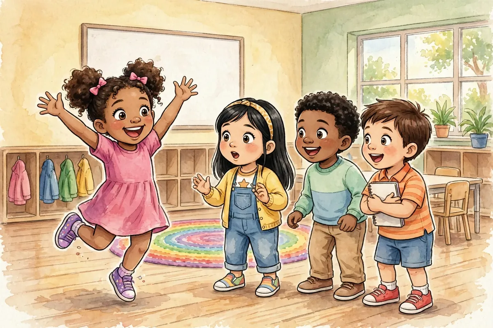
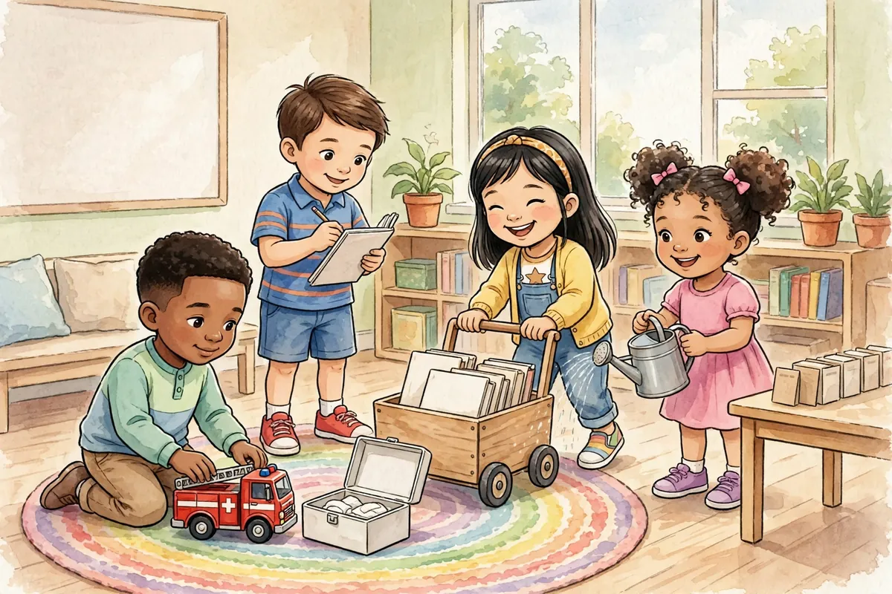
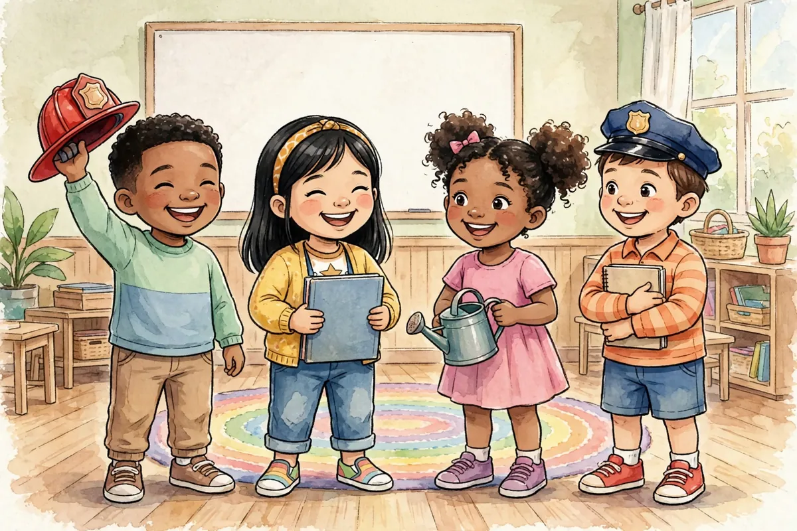
What is each friend doing?
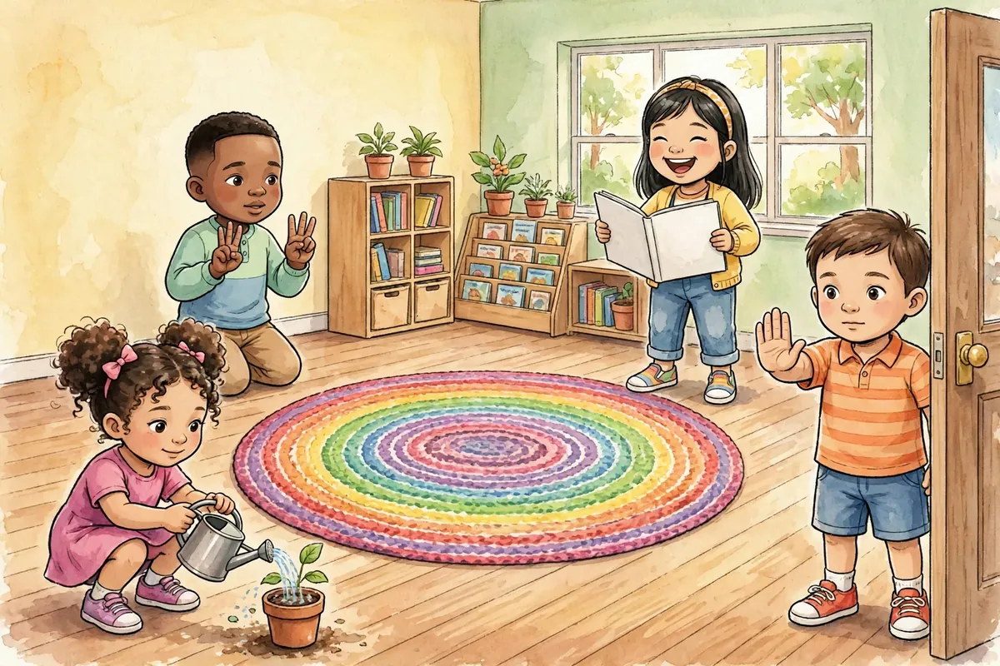
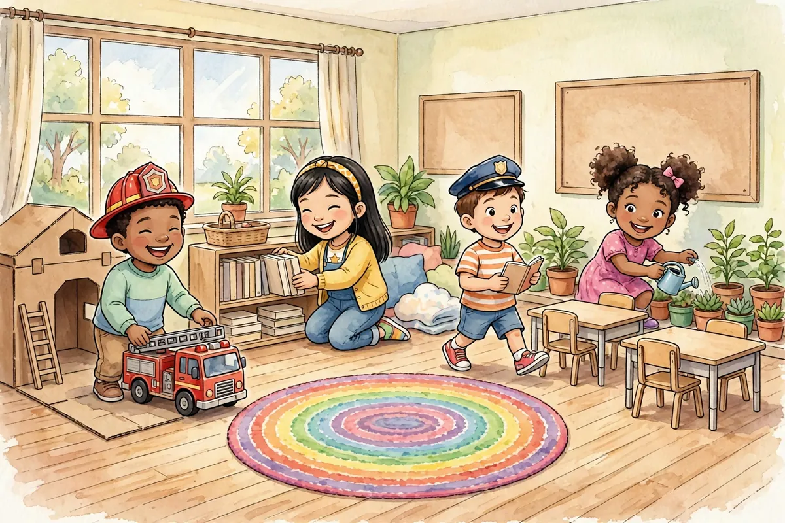
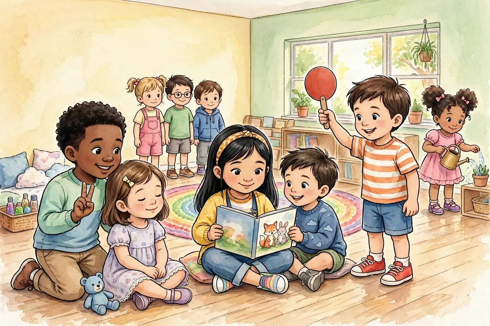
What did the friends learn?
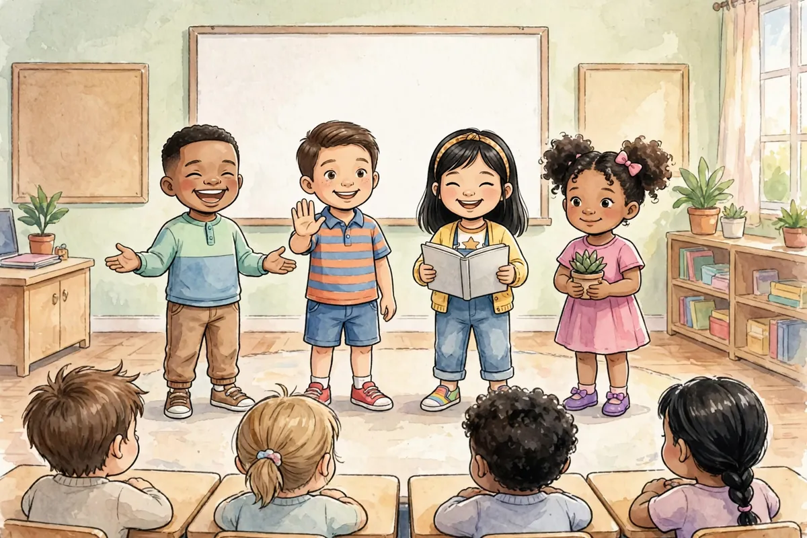
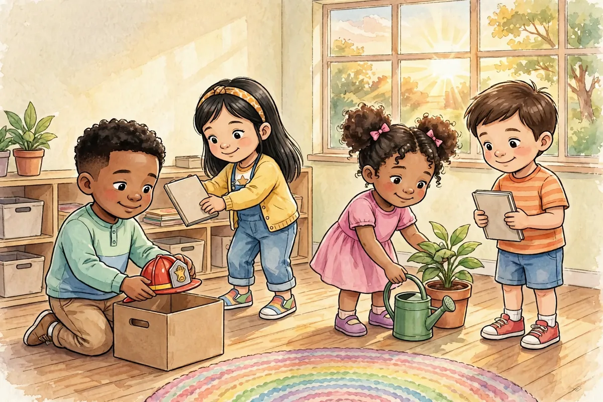
Great reading!
For Grown-Ups
Feeling/skill: Pride in recognizing personal growth across many experiences.
Ask your child: Which community helper did you like being the most, and why?
Try this: Let your child set up their own pretend-helper day at home.
Words to grow on: bustling, pretend, prepared, rehearsed, steady, checklist, belongs, patrol. Point at the tools as you name them — first-aid kit, checklist, book cart, watering can, seed packets.
The bigger picture: Being a community helper is much more than a costume — real helpers prepare and check their tools, train their skills before they are needed, look after their neighbors in ways big and small, and pass on what they know. This final visit turns the series around: the children discover those habits already live in them.
Standards: W.K.8, RL.K.2